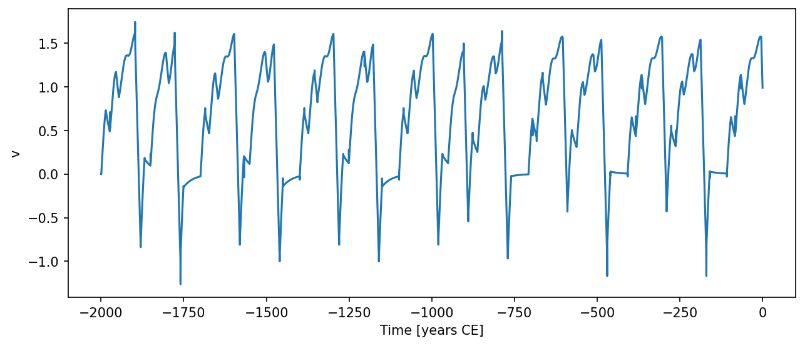

Model3
Model3(
var_name='ice volume',
f1=-16,
f2=16,
t1=30,
t2=10,
vc=1.4,
insolation=0.0,
state_variables=['v', 'k'],
non_integrated_state_vars=['k'],
diagnostic_variables=['insolation'],
*args,
**kwargs,
)Model 3 from Ganopolski (2024) describing glacial cycle evolution under orbital forcing.
The model tracks ice volume v and glacial regime k (1 = glaciation, 2 = deglaciation). The ice volume relaxes toward a forcing-dependent equilibrium:
dv/dt = (ve(f) - v) / t1 when k=1 (glaciation)
dv/dt = -vc / t2 when k=2 (deglaciation)Regime switches follow:
- k=1 → k=2 if v > vc, df/dt > 0, and f > 0
- k=2 → k=1 if f < f1
Parameters
var_name : str = 'ice volume'-
Label for the model output. Default
'ice volume'. f1 : float or callable orcc.Forcing= -16-
Insolation threshold for glacial inception (W/m^2; typically -20 to -15). Default -16.
f2 : float or callable orcc.Forcing= 16-
Insolation threshold for deglaciation inception (W/m^2; typically positive). Default 16.
t1 : float or callable orcc.Forcing= 30-
Relaxation timescale for glacial inception (kyr). Default 30.
t2 : float or callable orcc.Forcing= 10-
Relaxation timescale for deglaciation (kyr). Default 10.
vc : float or callable orcc.Forcing= 1.4-
Critical ice volume controlling dominant periodicity and asymmetry. Default 1.4.
Notes
State variables are v (ice volume, normalised) and k (regime index, non-integrated). The diagnostic variable insolation records f(t) at each output step.
The insolation parameter (default 0.0) provides the orbital forcing value used by the model. Register a time-varying orbital signal via::
model.register_forcing('insolation', cc.Forcing(calc_f))The internal derivative of forcing dfdt is computed via :func:calc_df by default; supply a custom callable or cc.Forcing to override.
Parameter defaults are taken from Ganopolski (2024). Time-varying parameters follow the standard callable contract (t), (t, state), or (t, state, model).
References
Ganopolski, A. (2024). Glacial cycles. Nature Reviews Earth & Environment, 5, 89–106.
Examples
import climatecritters as cc
from climatecritters.model_critters.g24 import Model3, calc_f
import matplotlib.pyplot as plt
model = Model3()
model.register_forcing('insolation', cc.Forcing(calc_f))
output = model.integrate(
t_span=(-2000, 0), y0=[0.0, 1], method='RK45',
kwargs={'max_step': 0.5}
)
ts = output.to_pyleo(var_names=['v'])
ts.plot()
plt.savefig('docs/reference/figures/Model3_example.png',
dpi=150, bbox_inches='tight')
Methods
| Name | Description |
|---|---|
| calc_dfdt | Evaluate df/dt — the time derivative of the orbital forcing at time t. |
| calc_vc | Evaluate the critical ice volume vc (constant or time/state-varying). |
| calc_ve | Equilibrium ice volume toward which the system is attracted. |
| calc_vg | Glacial equilibrium ice volume. |
| calc_vu | Unstable equilibrium ice volume separating glacial and interglacial basins. |
| dydt | Evaluate ice-volume tendency at time t and state x. |
calc_dfdt
Model3.calc_dfdt(t, x=None)Evaluate df/dt — the time derivative of the orbital forcing at time t.
calc_vc
Model3.calc_vc(t, x=None)Evaluate the critical ice volume vc (constant or time/state-varying).
calc_ve
Model3.calc_ve(v, f, f1, f2, vi=0)Equilibrium ice volume toward which the system is attracted.
In the bi-stable regime (f1 < f < f2) the target depends on the current ice volume v relative to the unstable equilibrium vu.
Parameters
Returns
ve : float-
Target equilibrium ice volume.
calc_vg
Model3.calc_vg(f, f1, f2)Glacial equilibrium ice volume.
Parameters
Returns
vg : float-
Glacial equilibrium ice volume.
calc_vu
Model3.calc_vu(f, f1, f2)Unstable equilibrium ice volume separating glacial and interglacial basins.
Parameters
Returns
vu : float-
Unstable equilibrium ice volume.
dydt
Model3.dydt(t, x)Evaluate ice-volume tendency at time t and state x.
Returns
: list of float-
[dvdt]— the ice-volume tendency. The regime indexkis a non-integrated state variable updated in-place.